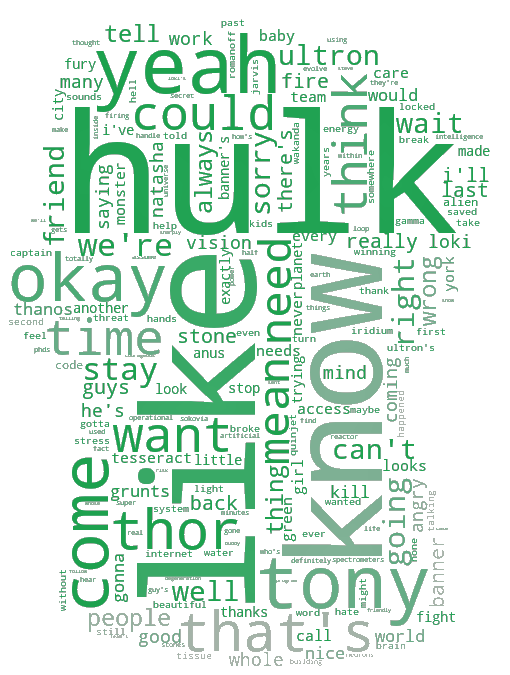

As an homage to Stan Lee’s complex and internationally diverse network of characters, we have decided to look into datasets on the Marvel Universe. The initial goal was inspired by the idea of a map of the world plotting out Marvel characters. Therefore, with this idea in mind, we decided to use the website categories “Characters” and “Characters By Nationality” to find out the roots of the beloved comic book characters from the Marvel Universe. Thereby, we could investigate how community-like the comic book characters are with regards to their nationalities, by building a network (directed graph) with characters as nodes and an edge between two characters if there is a link from the page of the first character to the other.
Yet, it’s impossible to mention the comic book character without discussing the Marvel Cinematic Universe. Therefore, we wanted to conduct some sentiment analysis of film transcripts showcasing interesting characters that we have identified in our network analysis. Thereby, we formulated the following problem statement:
In a network of the Marvel Universe’s comic book characters, how assortative are the comic book characters with respect to degree, nationalities and communities? And, how do the comic book characters with highest total degree in the network perform in the Marvel Cinematic Universe?
Based on our network analysis, we detect the characters with the highest total degree and retrieve the transcripts of each movie starring them from the wikia category “Transcripts”and fullmovietext.com. The text goes through a cleaning process, so we can retrieve the relevant information for the sentiment analysis. Afterwards, the tokens are sent through a TF-IDF process and used to generate the word clouds.
 The word clouds shed light on the main personality traits of Hulk and Iron Man. As seen in Hulk’s word cloud, he’s often very egocentric with an urge to be the strongest. His behaviour can sometimes be comparable to a child’s. He is often seen in the films repeating his own name multiple times and referring to himself in the third person (e.g. “Hulk, likes”). Nevertheless, he also holds very dear his good friends, namely Thor and Tony Stark, as he gets very overprotective over them during fights. Likewise, he is often enraged by the Marvel villains Loki and Ultron. Due to his excessive rage, he is often seen apologizing for the overreaction. Therefore, the word “sorry” is predominant in his word cloud. His alter-ego can be described as a workaholic and genius that, in opposition to Hulk, is very calm and careful with words.
 As seen in Iron Man’s word cloud, he’s often perceived as an arrogant character in the Marvel Universe. He always seems to have the need to know everything and be right about everything. He is also very dependent on his relationships with the characters Jarvis and Pepper. Lastly, the concept of time is always mentioned in his scenes - it seems as if Iron Man is always searching for more time.
As seen in Iron Man’s word cloud, he’s often perceived as an arrogant character in the Marvel Universe. He always seems to have the need to know everything and be right about everything. He is also very dependent on his relationships with the characters Jarvis and Pepper. Lastly, the concept of time is always mentioned in his scenes - it seems as if Iron Man is always searching for more time.
Overall, it was interesting to put the nationalities of the comic book characters into perspective. Also, we managed to conduct some interesting analysis and visualisations, including interactive networks and word clouds. Furthermore, we have also put a lot of tools from the social graphs and interactions class into use.
The next step would definitely be to remove the limit on characters and include more than 10.000 characters, so we can get a full overview over the network of comic book characters from the Marvel universe. However, we decided not to do this for this iteration, as we spent a long time debugging decoding and encoding issues related to the already present 10.000 characters. Also, the process to retrieve all the internal links is already very long, so it would take us longer with more characters to examine. This brings us to the next point - an improvement could be to implement a model to process faster the big data set. These changes could have brought up more interesting conclusions with regards to the characters’ nationalities.
Talking about the natural language processing part of the project, the hardest part was to retrieve and clean the transcripts, and in the end not all wanted transcripts could be obtained due to bad formatting that was not consistent of the websites where the text was taken from. An improvement of this part would be that after the retrieval of all characters we could do an extensive analysis of all Marvel movies and characters and compare more characters across all movies, and also compare the overall sentiments of the most important characters to get insights in their personalities, together with the analysis of their wordclouds.
s173583
s183214
s182276